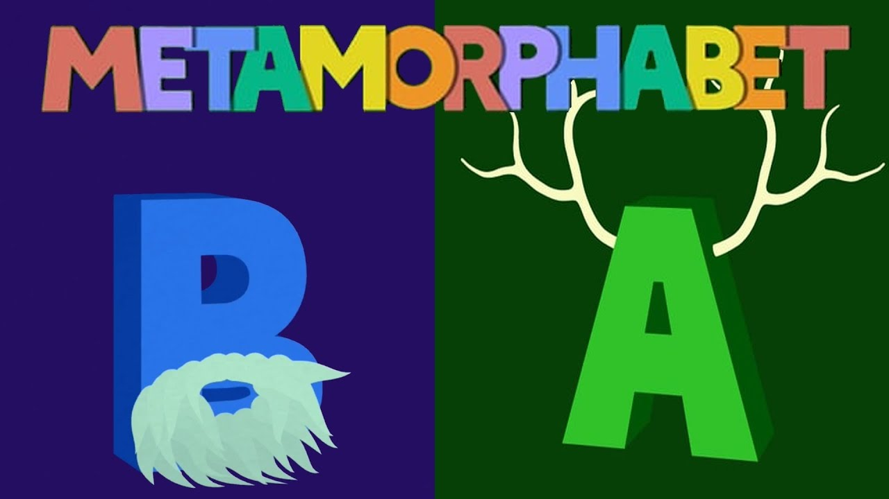

<<< go back
K오REANIMATION:
Interactive Korean Language Learning
I'm crafting an interactive and educational website to simplify the Korean alphabet for all ages. Utilizing motion graphics, users experience the language visually and audibly, learning through animations that transform letters into words, inspired by traditional Korean patterns and elements. This project aims to intersect technology, education, and culture, offering a fun and entertaining way to explore the beauty of the Korean language.
ROLE
Developer + Motion Graphics Design
FOR
Senior Design Project
SOFTWARE(S)
Figma, Adobe Suite (Illustrator, AfterEffects), React, Procreate
TIMELINE
Jan - May 2024 (ongoing)

PROBLEM
(//)
SOLUTION
An interactive program that allows users of all ages to learn a new language in a fun and exciting way!
TASKS
(//)
IMPACT
(//)
IDEATION
January 29th, 2024
Project Ideas and Inspirations
Initially for my senior design project,I wanted to do something involving both motion graphics and the physical world, like taking a physical label/design and making it come to life when you put your camera to it with AR. However, normal phone cameras do not have built-in code for that, so people would have to download a mobile app for it, which for the sake of the showcase and project, were not something I was willing to do. I do not know much about app building so I was also trying to avoid that. Some other ideas I had for this were to create interactive gaming posters, where, when scanned, offer exclusive content such as mini-games, character bios, or hidden game tips. However, all of these involved either AR or mobile application development, and my main passion is about interactivity and allowing my creativity to flow. Metamorphabet is a game that I am inspired from, although I do not want to work in 3D, I could put my own 2D spin on it. I like to play with the idea of layers and adding dimension through small details in my 2D design work, so I think I would like to play with this idea more.
February 5th, 2024
Finalizing Ideas
I'm developing a 2D interactive, educational website designed to teach the Korean alphabet to users of all ages. The platform will feature audio components to ensure users can hear the correct pronunciation of Korean phonetics, and if I have enough time, will also have additional features that will allow users to repeat the sounds back to the software to check pronunciation skills. The website’s main feature is its motion graphics that transform each letter into a word beginning with that letter. Its interactive elements are there to engage users and make the learning process more enjoyable. The site will incorporate traditional Korean patterns and cultural elements because culture plays a significant role in language learning. Although there are certain grammatical/syntax rules that are important to Korean writing, in order to make this more accessible to all ages regardless of known languages, I had to cut down on some information.
A brief playthrough would look like this:
The user begins at the first letter of the Korean alphabet (Hangul), with motion graphics displaying the stroke order of each Hangul character. After the letter is fully drawn out, the application with pronounce/sound out that letter. After the user interacts with the screen, the character will then morph into a word that starts with its corresponding letter (for example in English: the letter A would morph into an Apple). After the morphing animation, it will then play an idle animation and pronounce/sound out the word it is currently displaying. After the user interacts with the screen again, it will move on to the next letter of Hangul. I am aiming to do all letters (41) but I will stick to the simple vowels/consonants if I don’t have enough time.
RESEARCH
February 12th, 2024
Research on which programs or softwares I will use
- Body moving - after effects extension that exports animations into json data
-
Lottie-web - takes json data from body moving and formats it nicely for web
- Open source and well documented through github and several examples on their own websites
- Simple to use without many additional steps
- Variety of different control options for animations once integrated on web such as playing, pausing and controlling speed of animation
- CONS: some reviews have issues with lagginess/buffering. However, this only occurs when there are multiple elements playing its animation on a single page. I will only be displaying one animation at a time on the page so this should not have a huge effect on the framerate
-
HTML, CSS, JavaScript
- Simple to use
- No need for additional libraries because there is no additional backend (cloud, databases, etc) needed
-
Adobe After Effects
- Already have previous experience in other classes, would like to explore my skillset and focus on 2D animations rather than 3D
- I would like to do design/motion graphics in the future, this would help me hone in on my skills and learn the program better as well as preserve my skills
- Rather than hand drawn animation, I can use vector animations, and in turn, use lottie-web in order to integrate my animations to become an interactive program
February 19th
Project Content + Beginning of Storyboarding
I came up with all of the words for each letter of the korean alphabet. I tried sticking to one or two syllable words with simple vowels and consonants. The korean language involved certain writing rules that I do not want to get into and is a much more advanced scope than what I am trying to achieve, so I am not including the tense consonants or complex vowels. Simpling down my idea will also allow me to really market/promote it as a game for all ages so it makes it easier to understand for people. I also decided to add some verbs in the mix of the nouns, I am thinking of the noun words acting out the verbs. I feel like these transitions will make the game more seamless
- CONS: I cannot do too many verbs, otherwise I would be doubling the amount of custom animations I must do, therefore I only chose certain words to have those extra verbs
- CHALLENGES AND PROBLEM-SOLVING: Deciding against using the silent o in the alphabet. there are technically two versions of the Korean alphabet: the actual alphabet, and the written alphabet. If I were to do the written alphabet that includes the ‘o’, I feel like I would need to explain why the ‘o’ is there (batchim rules). however, I feel like that would be difficult for me to explain since I am trying not to use English and make this game inclusive for all ages. Although English learners might want to know those grammatical rules, children who may use this program must become accustomed to the words in other ways, and throwing out too much information may confuse or disinterest them. To keep all ages engaged, I am going to simplify it as much as possible while also trying to preserve the cultural aspect of the language
February 26th
Feedback + Storyboarding
I got various feedback after presenting what I had so far to my class. After the word displays, they recommended highlighting the letter that you were using (because adding placeholder and batchim stacking would make it confusing looking). Also, instead of making a transition out, maybe make it de transition instead (also less work, just have to reverse keyframes and not have to make an entire new word). I have decided to go back and redo some of the words/letter associations because now I have a better sense of how I want my animations to look like and how I want the user to interact with them more. I also want to keep both the art and motion styles consistent throughout, so it all looks like a cohesive game. However, I will have to keep in mind that because there are so many letters I have to go through, I must be able to make them all still relatively unique and not too uniform, otherwise, I run the risk of making the entire game seem monotonous. I also wanted to add some humor or funny animations here, I think it would add to the experience and make it more engaging for users
March 4th
Revised Storyboard
Figma Prototype
I revised my storyboard and finalized my ideas for each of the letters, drawing out what I want each letter transition to look like. I tried making the transitions more seamless without making it seem clunky or awkward, but doing so made me have to take a step back and redo my entire script. This week was mostly refining what I have had so far, which is probably not great since I do have deadlines that I need to get it done by.
Branding

I then created a finalized color scheme for my project and what kind of style I would like for the animations. When I was researching traditional Korean colors, I found that many different colors are important to Korean culture, so I decided to put my spin on it and curate my palette based on my research as well as personal aesthetics. For the art style, I was looking into Korean folk art and tried recreating those, however, because the artwork is very detailed, it would make animating it extremely difficult. I could use puppet pins in After Effects, but I honestly do not like the way that puppet pins look most of the time. Instead, I am opting for sticking to a semi-line art style, as a lot of traditional Korean paintings include line art, and incorporating gradients and a noise texture effect onto the images to make it look more paper-like. However, the rest of the style will be simplified, because I want my main focus to be the interactivity, engagement, and flow of it all.
PRODUCTION
Opening Letter Animation
I created a first draft of what I wanted in After Effects, however, it felt too modernized and did not represent the branding I sought after enough. After much deliberation, I decided to start the animation from scratch, despite already spending a lot of time on it.
After making design changes, I was much happier with the outcome. I added various noise and texture effects, as well as a gradient, cleaned up the linework, added sounds, and redesigned the burst effect to create this final product. I will be using this as the main transition for all the opening letters of the alphabet, and thankfully a lot of Korean letters recycle the same strokes and lines, so I do not need to alter that many things for each letter. Next week, I will start animating the actual iconography associated with the letters and words.
March 11th
Feedback + Revised Outline
On Monday, we had feedback and critique sessions in class. I got a lot of great input, such as incorporating more cultural elements within the work and adding an English subtitle option for English speakers. Although I do want to make this for all ages, they made a good point on how it would be extra helpful to have a subtitle option for other languages for further accesibility and features. I was also told to put in a home screen where people can choose to start from a certain letter, rather than it being in a linear fashion. This way, people can refer back to certain letters rather than having to go through the whole thing in one sitting. I also agreed with the aspect of including more cultural aspects, since culture is a huge part of the language.
Cover Sketch

Because our senior design showcase forms are due soon, I wanted to finalize my cover on it. This is the sketch for what I had in mind, then I am going to final render it in Adobe Illustrator. Honestly I could not get a lot done this week because of midterms but I am planning on working on it more over the break.
March 25th
Production
My progress so far has mainly just been doing the actual animations so far. Here is the idle animation for the baby, this is part of the larger file with the actual letter animations. Exporting it takes a long time so here is a screen share of it.

I decided to change from doing the entire alphabet to just the vowels or the consonants. I have the words already in mind and since someone mentioned during the feedback sessions that it would be nice to have cultural elements, I think I will do the words that involve the culture too, and all the other words I will add on in the future if I want to continue to expand on this project. For now, I do not have the time to do all 25 simple letters. So far, I only have two of them done, and it decreases my workload a lot if I do not pressure myself to do the entire thing. I realized that the process actually takes a really long time, especially since although it would be the same template, I am doing a different design, animation, and concept for each letter. So for every single animation, I need to sketch it out, storyboard the motion graphics, create the design within Illustrator, animate the letter morphing and the idle animations, and then integrate the interactions and files into the website. For every. single. letter. So this is why I decided to cut my workload by half…
For my next steps, I need to make the actual website and figure out how to integrate the After Effects extension into my website, then create a catalog or menu that shows each letter so users can access any letter without having to play through the entire program to get to a certain letter. I am also going to continue doing the letter animations and hopefully get through at least two a week.